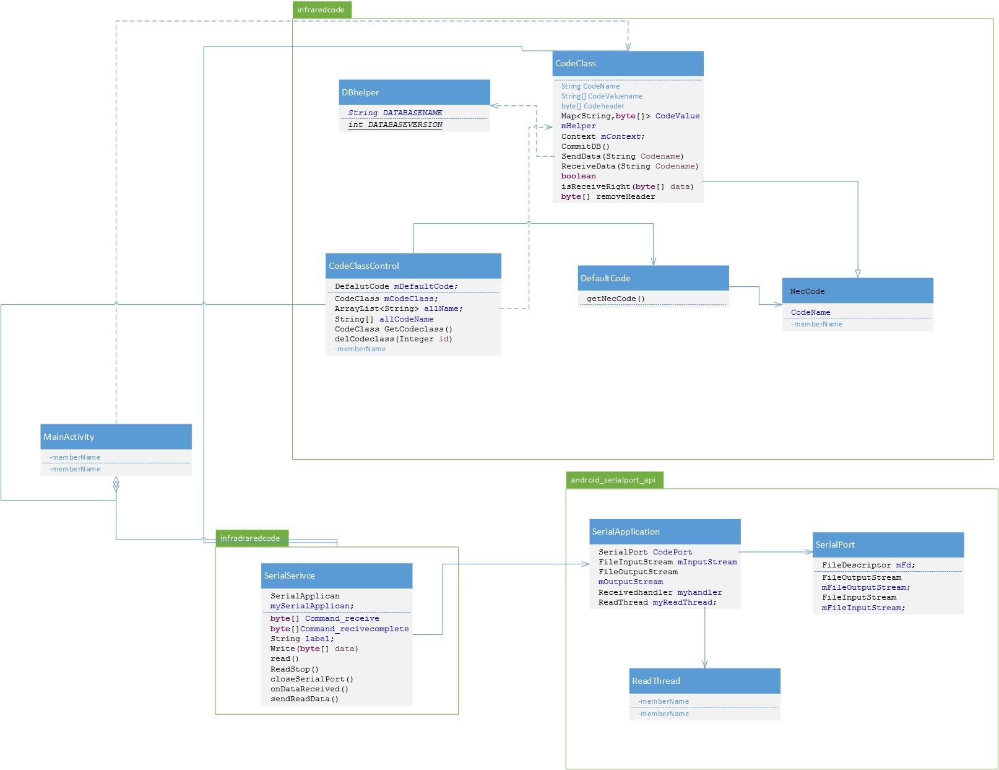

This is a basic introduction¶
The remote Android App is a complement demo of Cms remote IR Remote Controller.It’s extensible and convenient. User can directly use it for most scenes,but we also provide APIs for user to develope some special remote or just use Android device‘s UART. this page will show the App’s class diagram and work flow.
Class diagram¶
There are three java packages in the demo:android_serialport_api, infraredcode, infraredCodeSerivce. android_serialport_api is a set of classes about serialport, infraredcode is a set of classes about infraredcode,and infraredCodeSerivce include a serivce to operate Communication between CodeClass and Serialport. In these Classes, the CodeClass is the core class, It’s a abstraction of reality remote which includes member variable CodeName*s ,*CodeValue*s.It’s Member functions *SendData(Codename) will trigger SerialSerivce to Send byte[] to Fpga through serial port,and CommitDB() will wirte CodeClass to Sqltite. CodeClassControl is a Class which can create CodeClass,delete CodeClass and get All CodeClasses name in the Sqltie.
There are a few things to note
- This app runs successfully in the android Development Board which mode is Intel Sharks Cove. So theoretically It can be compatible with all x86 and arm cpu.
- This app need root permission.